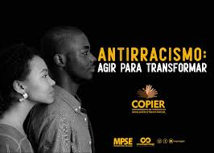
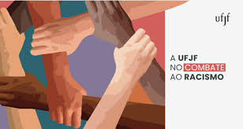
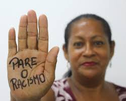
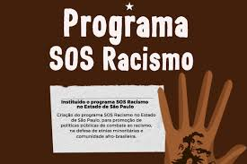
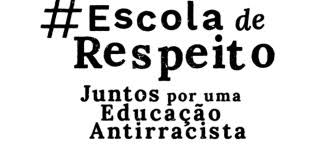

O que é Educação e Conscientização Antirracista?
Educação e conscientização antirracista são práticas fundamentais para combater o racismo e promover a igualdade racial. Envolvem ensinar sobre a história, os impactos e as formas de discriminação racial, além de promover a valorização da diversidade e o respeito mútuo.
Importância da Educação Antirracista
A educação antirracista é crucial para desmantelar preconceitos e estereótipos. Ela capacita indivíduos a reconhecer e confrontar atitudes e comportamentos racistas, promovendo um ambiente mais justo e inclusivo.
Conscientização Social Antirracista
Conscientização social antirracista envolve a disseminação de conhecimento sobre o racismo estrutural e suas consequências. Campanhas de conscientização podem mobilizar a sociedade para a ação coletiva e a mudança de atitudes.
Educação sobre Diversidade e Inclusão
Educar sobre diversidade e inclusão é essencial para criar uma cultura de respeito e valorização das diferenças. Envolve ensinar sobre as diversas culturas, etnias e identidades, e promover a inclusão em todos os setores da sociedade.
Programas de Conscientização Antirracista
Programas de conscientização antirracista são iniciativas que visam educar o público sobre as questões raciais. Eles podem incluir workshops, palestras, campanhas de mídia e eventos comunitários, todos focados na promoção da igualdade racial.
O Papel das Escolas na Educação Antirracista
As escolas têm um papel crucial na educação antirracista. Incorporar temas como história da escravidão, direitos civis e igualdade racial no currículo escolar é fundamental para preparar os alunos para serem cidadãos conscientes e engajados na luta contra o racismo.